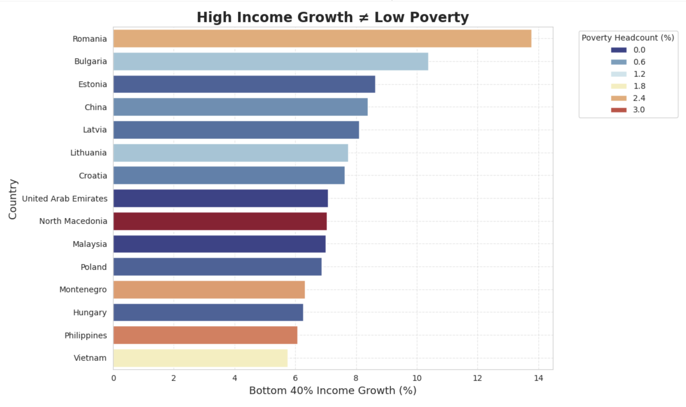
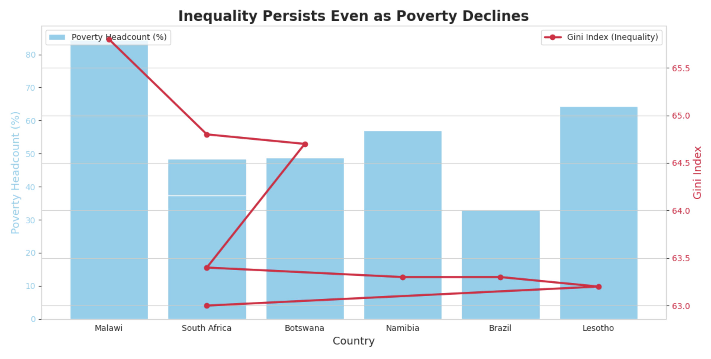

Project 2: Persuasive or Deceptive Visualization
Student: Aryslanbek Vakilov — UCSD Email: avakilov@ucsd.edu
Proposition
"High income growth among the bottom 40% of the population does not always result in reduced poverty or lower inequality."
FOR the Proposition

Figure 1: High Income Growth ≠ Low Poverty. This chart shows that even countries with rapid income growth among the bottom 40% can still struggle with high poverty levels.
Design Decisions and Rationale
- Data Transformation (Score = +1.5 Earnest): Filtered the data to the top 15 countries with the highest bottom-40% growth rates. This focuses attention on countries often seen as economic “success stories,” revealing that poverty can still remain high even in fast-growing economies.
- Color Encoding (Score = +2 Earnest): Used a blue-to-orange gradient to represent poverty headcount, making differences visually clear without distortion. Warmer tones draw attention to countries with greater poverty.
- Title Framing (Score = -0.5 Slightly Deceptive): The title “High Income Growth ≠ Low Poverty” intentionally provokes skepticism about economic growth. The wording creates a persuasive tone without overt bias.
AGAINST the Proposition

Figure 2: Inequality Persists Even as Poverty Declines. This dual-axis chart shows that while poverty levels may fall, inequality (as measured by the Gini Index) often remains high.
Design Decisions and Rationale
- Dual-Axis Encoding (Score = -1 Mildly Deceptive): Displayed poverty rates on the left axis and Gini Index on the right axis. This combination encourages comparison but can introduce interpretive bias through scale differences.
- Data Transformation (Score = +1.5 Earnest): Averaged values over several years to reduce noise and show broader trends in poverty and inequality rather than year-to-year fluctuations.
- Color and Line Styles (Score = +2 Earnest): Contrasting colors (red for inequality and blue for poverty) make the relationship clear at a glance and draw attention to the gap between declining poverty and persistent inequality.
About the Gini Index
The Gini Index measures income inequality within a country on a scale from 0 (perfect equality) to 100 (maximum inequality). Including the Gini Index alongside poverty rates reveals whether economic growth benefits all citizens or mainly the wealthier segments of society. It is helpful for understanding how countries can reduce poverty while still struggling with inequality.
Final Reflection
Working on this project helped me see how design choices influence the stories that data tell. Creating two visualizations from the same dataset showed how easy it is to shape perception without changing the numbers. Even small choices—titles, color scales, or axis limits—can guide a viewer toward a specific interpretation.
The biggest challenge was finding a balance between clarity and honesty. A visualization should be engaging but not misleading. I learned that ethical visualization is about being transparent with intent and faithful to the data, even when trying to persuade. In the end, persuasion is acceptable as long as it clarifies rather than conceals. As data visualizers, our goal is to inform people in a way that is truthful, clear, and thoughtful.